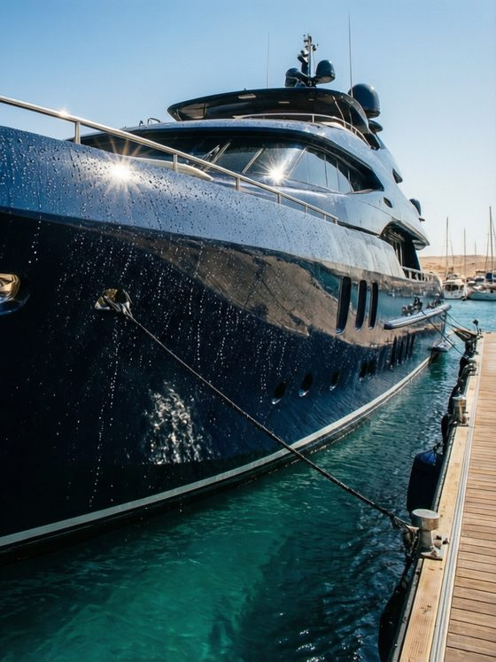
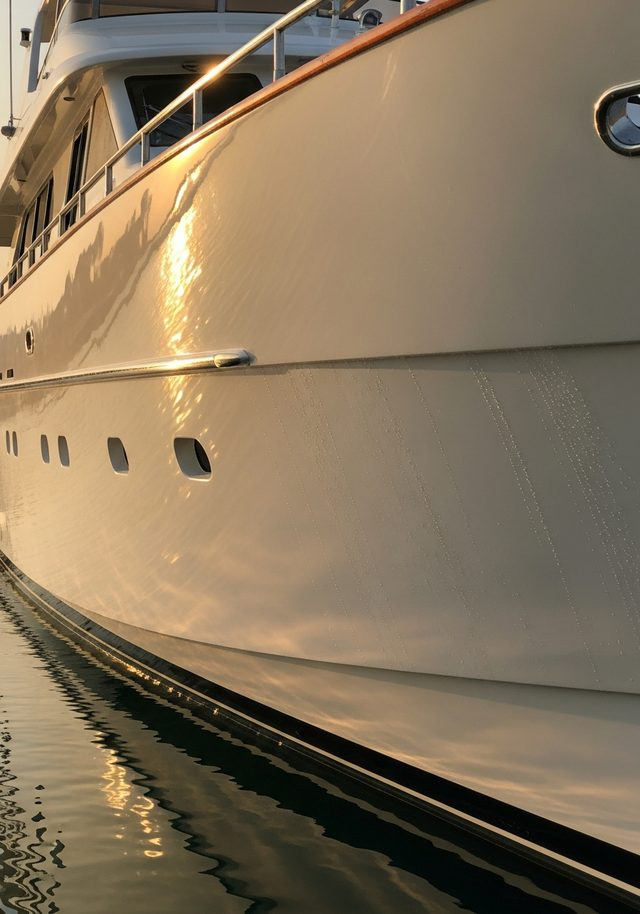

Detailing
Decontaminate and strip salt, fallout and biofilm so the true surface shows. Premium maintenance that holds for 3–9 months.
Yacht detailingMarine Surface Protection · Egypt
The protective layer between luxury and the sea.
AquaLayer is Egypt's marine surface protection specialist — ceramic, graphene and paint protection systems engineered for saltwater, to help reduce oxidation and keep every vessel looking newer, longer.

The reframe
Detailing makes a vessel look clean today. Protection keeps it looking new for seasons. The sea is working on your hull right now — we engineer the surface that resists it.
Chlorides bond to gelcoat and metals, driving corrosion, water-spotting and staining along and below the waterline.
Egypt's year-round sun breaks down resin and pigment — the chalky, faded surface owners call oxidation.
Every unprotected week compounds. The surface doesn't wait for the next haul-out — and neither should the protection.
The system
Clean. Correct. Protect. Every AquaLayer engagement builds the same way — restore the true surface, then seal it under marine-grade protection.
Decontaminate and strip salt, fallout and biofilm so the true surface shows. Premium maintenance that holds for 3–9 months.
Yacht detailingCut oxidation and restore depth and gloss to the gelcoat — the step that has to happen before anything is sealed in.
Gelcoat correctionLock the corrected surface under marine-grade ceramic graphene (12–24 months) or 10-mil marine PPF (36–60 months).
Protection systemsThe transformation
Oxidation dulls; correction and protection bring the surface back. Move the waterline to watch matte, neglected gelcoat resolve into a protected, reflective finish.
Drag the waterline to compare an oxidized surface with a protected one. See real transformations in the gallery.

Why AquaLayer
Marine-native from the first layer — formulated for saltwater, UV and the realities of Red Sea and Mediterranean berths. Honest lifespans, exact figures, no overpromises.
Premium maintenance protection, mapped to oxidation level.
Nano ceramic graphene coating for hardness, gloss and hydrophobics.
Self-healing paint protection film for the most exposed surfaces.
The invitation
The inspection is free and consultative. We assess your vessel's surface, read its oxidation level, and recommend the right layer of protection — no pressure, no quote-chasing.